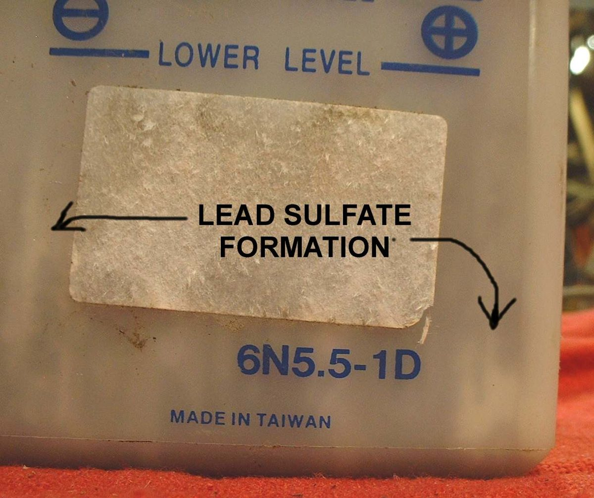

The bike was fine yesterday, but now the starter is slow or dead and the lights are weak. A battery goes flat for one of four reasons: something drains it while parked, the charging system does not refill it while riding, the battery itself is worn out, or the rides are too short to put back what starting takes. The test results tell you which. Electric motorcycles: see Small 12 V battery is flat.
Is it safe to ride?
With care once started. A fuel-injected bike needs battery power to run its pump and ECU and may stop if the battery is very low. Do not rely on a bike that will not start by itself.
Quick checks first
- Was anything left on: key in ON or PARK, a light, a USB charger?
- Look at the brake light with the key OFF: is it lit?
- Are the battery terminals tight and clean?
- How old is the battery? Lead acid batteries often weaken after 2 to 3 years (K-Light 125 manual).
- Mostly short trips with the lights on?
- A flat battery freezes more easily than a charged one. Do not charge a frozen battery; let it thaw first.
Diagnose it step by step
1Was the key or a light left on?
- Yes: charge the battery and check it holds charge. Test and charge a 12 V battery. To start now: Jump start a motorcycle safely.
- No: go to step 2.
2Charge the battery fully. Does it reach the charged value? (K-Light 125: 12.8 V or more, 30 min after charging)
- No: the battery is worn out. Replace a 12 V battery.
- Yes: go to step 3.
3Left off the bike (disconnected) for a day, does it keep its voltage?
- No: the battery self-discharges; replace it.
- Yes: go to step 4.
4Is the brake light on with the key OFF and levers released?
- Yes: a brake light switch is stuck. The K-Light 125 manual names this first (PDF page 36). Test and adjust the brake light switches.
- No: go to step 5.
5With the key OFF, is the current draw above the limit? (K-Light 125: 1 mA or less)
- Yes: Find what is draining the battery and see Something drains the battery with the key off.
- No: go to step 6.
6Does the charging voltage reach the manual's range? (K-Light 125: 14.5 ± 0.5 V at 5000 rpm)
- No: Battery is not charging while riding. Use Test the charging system.
- Yes: the bike is probably used for very short trips with heavy loads. Charge the battery with a charger now and then, and check for added accessories.
Causes, most likely first
| Cause | How to confirm | Fix |
|---|---|---|
| Key or light left on | Owner check | Test and charge a 12 V battery |
| Loose or corroded terminals | Terminals move; powder | Clean and tighten battery terminals |
| Worn battery | Will not hold charge off the bike | Replace a 12 V battery |
| Brake light switch stuck on | Brake light lit with key off | Test and adjust the brake light switches |
| Parasitic drain | Key-off current above limit | Find what is draining the battery |
| Charging fault | Low charging voltage | Test the charging system |
| Frozen or sulfated battery | Case bulged after a freeze, or no charge after standing flat for a long time | Test and charge a 12 V battery |
Reference values (K-Light 125)
| Item | Value | PDF page |
|---|---|---|
| Charge complete, 30 min after charging | 12.8 V or more | 59 |
| Key-off leakage current | 1 mA or less | 36 |
| Charging voltage | 14.5 ± 0.5 V at 5000 rpm | 78 |